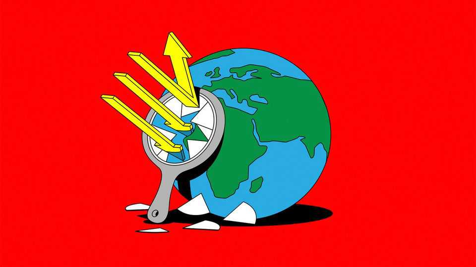
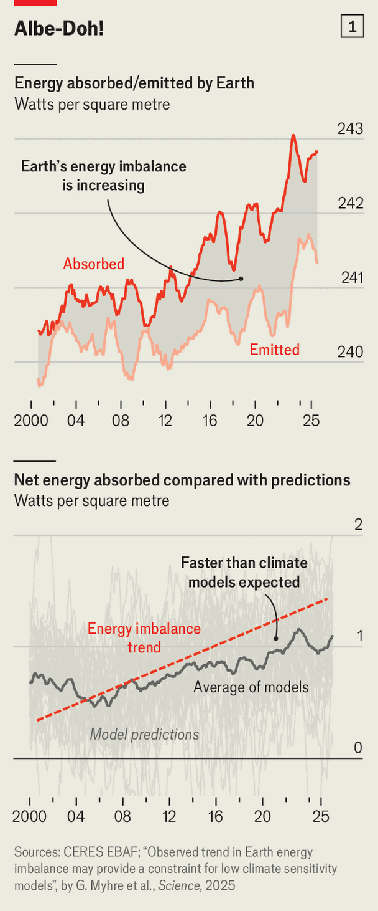
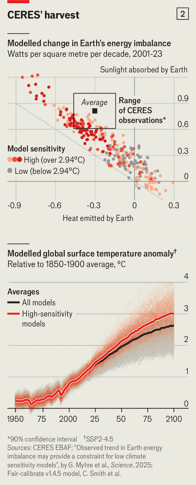

The rate at which Earth is absorbing energy is alarming climate scientists
Reflections on a warming planet
July 16th 2026

IN APRIL the crew of Artemis II showed that Earth’s loveliness from afar, originally revealed by the Moon-bound Apollo missions of the 1960s and 1970s, remains one of the space age’s enduring truths. The home planet’s intricate, swirling, colourful complexities turned out to offer just as wonderful a contrast to the sloe-black of space and the drab dull Moon today as they did when seen half a century ago.
More prosaic observations from space, though, reveal a disturbing change. They show that the brightness with which that beauty burns is dimming. Seen from afar, Earth is looking steadily darker.
Evidence of this dimming comes from a project called Clouds and the Earth’s Radiant Energy System (CERES). Since the end of the 1990s the CERES team at NASA, America’s space agency, has been using instruments on various satellites to do some basic planetary book-keeping. They measure the incoming sunshine (visible light and shortwave infrared) and the fraction of this that gets reflected back into space. They also measure the amount of energy shed by the planet itself. Everything with a temperature radiates energy. Earth does so in the longwave part of the infrared.
The amount of sunshine reflected is known as the albedo. This is going down. Everything not reflected is absorbed, so the energy absorbed is going up. Think of it as energy income. The heat given off in the infrared, which represents the planet’s outgoings, is also increasing. As Earth gets hotter the laws of thermodynamics require it to put out more infrared, and though greenhouse gases stymie this response they cannot entirely negate it.
But the increased outgoings have not kept up with the increased income. In book-keeping of the financial sort, as Mr Micawber pointed out, incomings larger than outgoings result in happiness. When it comes to the planet’s energy budget, excessive income heralds misery.

The energy the planet absorbs but does not re-emit is known as Earth’s energy imbalance (EEI). It is the fundamental driver of climate change. If Earth’s energy accounts were balanced, there would be no long-term alteration of the climate. When the accounts fall out of balance, however, so do matters climatic. And if an imbalance goes on growing then, other things being equal, the climate will be driven further and further from its original state. Which is bad, for the measurements show the EEI has more than doubled since 2000 and continues to grow (see chart 1).
Until recently the EEI was more or less entirely a theoretical thing. Before satellites, the best way of measuring the whole Earth’s albedo was by training telescopes on the Moon to measure “Earthshine”—light reflected first from Earth to the Moon and then from the Moon back to Earth. Only with CERES (which still sneaks the occasional peak at the Moon for calibration purposes) were consistent long-term measurements of it possible.
Those measurements are, moreover, vouched for by data from a completely different source. Since the turn of the century an international programme called Argo has launched thousands of floats, which drift around the oceans measuring temperature, salinity and other things at depths of up to 6km. Since more than 90% of the energy absorbed by Earth goes into the oceans, most of the extra energy now being taken in should end up there, too. Argo’s measurements confirm that it does, tallying closely with the CERES data.
Armed with a couple of decades of results from both sources, scientists now feel they have a real handle on what the EEI is doing. And what it is doing alarms them. “For the first time we’re interpreting measurements,” says Bjorn Stevens, who runs the Max Planck Institute for Meteorology in Hamburg. “That’s a game changer for me.” And if it is scientifically exciting, the new game also looks alarming.
This alarm takes two linked but distinct forms. The first is the likelihood that, even as the coming decade sees greenhouse-gas emissions level off and perhaps start to fall, the rate at which Earth’s surface temperature is rising will continue to quicken. Though changes in the EEI do not feed through into global temperatures in a straightforward way, feed through they do. Reto Knutti, a climate scientist at ETH Zurich, says the rate at which the EEI is going up suggests that near-term warming could be anywhere from 10% more to 30% more than the current consensus.
Evidence of such increases may well be here already. El Niño events drive up the world’s average surface temperature (and do a lot else besides) by moving heat stored in lower parts of the tropical Pacific into the ocean’s top 100 metres. In the El Niño of 2023, with Earth’s albedo the lowest ever recorded, the top of the ocean was getting a great deal of heat from elsewhere, too. A study by Minobe Shoshiro of Hokkaido University and his colleagues suggests the EEI’s contribution to upper-ocean heating when that El Niño got started was 75% higher than had been the case for this century’s previous El Niño.
Dr Minobe and his colleagues showed that this massive influx of heat explained the increasing frequency of extreme conditions during those two years, which saw records of various kinds set that went well beyond what would be expected on the basis of the trend in surface temperatures. Something similar, Dr Minobe suspects, may be on the cards for this year’s El Niño, which is shaping up to be a whopper.
The second form of alarm is the degree to which all this comes as a surprise. Scientists think there are two basic reasons for Earth’s diminishing albedo. One is that stricter controls on the amount of sulphur dioxide emitted from power plants and ocean-going ships have led to fewer toxic, airborne sulphate particles, or “aerosols”. Because those tiny aerosols are also shiny aerosols, this has also made Earth dimmer. The other is that greenhouse-gas-driven climate change reduces the extent of sea-ice, shrinks glaciers and perturbs some types of cloud—all of which reduce the amount of reflected sunlight.
The computer models used to understand the climate, and on which the Intergovernmental Panel on Climate Change (IPCC) relies for its predictions, capture both of these effects. But they cannot match the magnitude of the observations.
Late last year more than 50 researchers in the field published a paper which asserted that the “strong upward trend in the imbalance is difficult to reconcile with climate models. [We are now left in] little doubt that the real world signal has left the envelope of model internal variability.”
This is not just a problem for science. As Maria Rugenstein of Colorado State University puts it, “Lots of people are using these models for impact assessment, for carbon budgets—for anything we say about the future, we use these models which cannot reproduce the currently observed energy imbalance.”
This March Dr Stevens convened a meeting in Schloss Ringberg, a castle overlooking the Tegernsee, a lake in Bavaria, at which experts discussed the possible roles of clouds and sulphate particles—which, to climate scientists, are two quite different types of thing.
Sulphates are a so-called forcing—a change in the way energy flows through the system which is imposed from the outside. Cloud changes are feedbacks—responses to such impositions which either amplify or damp down their effects. If climate models are not producing the EEI seen in the real world, the likelihood is that they are either underestimating the cooling effects of the sulphate forcing, or that they do not accurately capture the feedbacks through which changes in net forcing lead to changes in cloud cover. For a week oceanographers, instrument designers, climate modellers, aerosol experts and atmospheric physicists tussled over the arcana of each other’s work to explain this.
The explanation which garnered most support, according to a straw poll Dr Stevens conducted at the end of the week, was that the sulphate forcing was being miscalculated. Various measurements needed for the calculations are hard to make. “A lot of the components are not very well observed, if they’re observed at all,” says Chris Smith, who works on the matter at IIASA, an international research institute based in Austria. Aerosols are mobile but short-lived. They can travel thousands of kilometres from their source, but not the tens of thousands needed to spread around the world like greenhouse gases. This means that their effects are patchy.
They are also various. The basic effect is directly reflecting sunlight back into space. But they have indirect effects on clouds as well, and those seem to produce more of the cooling. The properties—and sometimes the very existence—of low clouds depend on the availability of aerosols on which water vapour can condense into droplets. This means that, if they are in the right place, aerosols can brighten clouds, lengthen their lives or even bring them into existence from scratch. But all this, again, is difficult to measure.
Øivind Hodnebrog of CICERO, Norway’s main climate-research institute, and his colleagues rooted through data and models to try to form a coherent picture of the aerosols’ decline. They concluded that half the increase in the EEI trend between 2001 and 2019 could be ascribed to the cleaning up of the air, and that past estimates of this change in forcing had been 10-40% too low.
Since 2019, when that study ended, abatement has continued apace. Worldwide sulphur emissions have fallen from 81m tonnes to 69m. Much of that was a result of new controls on sulphur emissions from ships, which were imposed in 2020 by the International Maritime Organisation (IMO). Sulphates from ships on the high seas are particularly powerful forcers, largely because the scarcity of other nearby aerosol sources increases the marginal effect of the added ones.
Researchers estimate that the IMO’s 2020 regulations reduced sulphur-related cooling by more than 10%. That is a bigger change to the climate than any measures taken on carbon dioxide have had. Unfortunately, it is in the wrong direction.
What then of the feedbacks? Cloud cover has certainly been changing. Last year Helge Gössling of the Alfred Wegener Institute and his colleagues analysed cloud patterns for 2023, a year when temperatures hit a record high, the albedo a record low and the EEI a level that not one of the models relied on by the IPCC could match. They found a striking dearth of low-level clouds over some bits of ocean.
A more recent, long-term assessment of the role of low clouds, by Paulo Ceppi of Imperial College, London, put that result into the context of a two-decade trend. It found this trend did indeed have a significant effect on the EEI, one which seems to explain about half of its growth. But it also found the trend’s strength was no larger than models predict.
If sulphates can explain about half the growth in the EEI, as Dr Hodnebrog and his colleagues argue, and clouds can explain about half, that might seem to wrap things up. The climate remains bad and, as sulphur emissions fall yet further, things are sure to get worse. But the explanations themselves seem fine.
Unfortunately it is not quite that simple. For one thing some of the cloud effects, those caused by fewer aerosols, are counted in both analyses. For another, the thing the models find hardest to reproduce is not the size of the imbalance, but the degree to which it is dominated by the falling albedo. Kyle Armour of the University of Washington says that is what worries him most about the CERES data. “It’s a much larger shortwave-energy [ie, sunshine] accumulation than the models can produce. So whatever the models are doing, they appear to be missing some processes.”
Recent work by Gunnar Myhre, also of CICERO, along with Dr Hodnebrog, Norman Loeb of NASA’s Langley Research Centre, who is responsible for the CERES data, and Piers Forster of the University of Leeds, who led the relevant part of the 2021 IPCC report, underlines the point. They looked at how well the models considered by the IPCC dealt with the changing EEI when the rates at which absorbed shortwave and emitted longwave radiation are increasing are separated out.

They concluded that even when the models came close to getting the right EEI, they got there in the wrong way. They tended to have a lower increase in absorption and a lower increase in emission; in balance-sheet terms, less income and less outgoings, even if the gap between the two was almost the same. But if all the models were wrong in the same direction, some were wronger than others. And the most wrong all had one thing in common: low “climate sensitivity”.
Climate sensitivity is a way of thinking about the sum of all feedbacks—an estimate of the temperature rise to be expected for a given increase in forcing. In 2021 the IPCC reckoned that the best estimate of this sensitivity, given understanding of forcing at the time, was 3°C, with a 90% chance of a value between 2°C and 5°C.
Dr Myhre and his colleagues found that, when judged by their performance on the EEI, models with a sensitivity estimate of less than 2.94ºC could, with high confidence, be ruled out. The IPCC’s best estimate of climate sensitivity is, in other words, the lowest still plausible (see chart 2). Moreover, a recent study led by Gergana Gyuleva, a colleague of Dr Knutti’s at ETH Zurich, using a different measure of climate sensitivity, gets a similar result.
A long-time champion of higher climate sensitivities is James Hansen of the Earth Institute at Columbia University. Dr Hansen, a veteran who has been working on climate models and climate sensitivity since the 1970s, thinks the answer to the question “forcings or feedbacks?” is a resounding both. Sulphate effects are big; climate sensitivity is high.
As a result he believes warming is currently growing not at 0.27°C per decade, the rate Dr Forster and his colleagues currently calculate, but at a whopping 0.4°C a decade. On that basis he expects the current El Niño to make both this year and next the hottest on record (most prognosticators think that its full effects will make this happen only next year). His projections see warming since the 19th century reaching 2°C—and thus surpassing the limit enshrined in the Paris agreement on climate in 2015—by the end of the 2030s.
Few of Dr Hansen’s peers agree with all of this. They take issue with the way he derives his high climate sensitivity from analysis of the ice ages and the warm periods between them. According to Dr Armour the pattern of the warming at the end of the most recent ice age did not look like the pattern of warming being seen today.
Most discussions of climate sensitivity deal in global averages. But it is becoming increasingly clear that patterns matter. The oceans are not warming homogeneously, and some parts of the world are better at losing heat than others.
The classic example is the “warm pool” in the western Pacific. Surface heat drives powerful convection into the atmosphere above, producing towering thunderclouds. This convection moves heat up towards the top of the atmosphere very efficiently. And once there that heat is more easily lost to space as infrared. The planet gets a radiator; its climate sensitivity goes down.
Work by Vince Cooper of MIT, a former student of Dr Armour, applies similar ideas to the end of the ice age. The bits of the sea surface which were most anomalously cold back then were in northern high-latitudes. And for a given amount of warming, a world where that warming is concentrated in the high-latitudes will have a higher climate sensitivity than a world of more homogeneous warming like today’s. The changes in global average temperature seen then do not imply particularly high sensitivity now. In fact, Dr Cooper thinks they suggest that today’s sensitivity is unlikely to be more than 4°C.
But the importance of patterns does not lie only in the past. Dr Rugenstein and others have been working for some time on the problem that the patterns of warming found in climate models do not, by and large, reflect those seen in the real world. And some aspect of this disjunction might explain why the models are not matching the real EEI. At the Ringberg meeting the number of people who thought that pattern effects might yet explain the EEI was smaller than the “forcings are wrong” crowd, but larger than any other group.
Unfortunately, it is not clear quite what that explanation would look like—not least because, as Dr Stevens puts it, “No one knows what makes the patterns.” Are they the result of natural variability, with their arrangement over the past few decades—during some of which the warm pool radiator was working very well— largely a matter of chance? Or might they be explained through a mechanism that the models do not yet know how to capture? “My intuition”, says Dr Rugenstein, “is that the models’ ocean heat uptake is wrong.” This would lead to problems with the sea-surface temperature patterns.
Getting models to mirror the way the ocean couples to the atmosphere is a longstanding problem, and one that looks hard to solve. But it matters immensely. The oceans of the dimming Earth have been absorbing ever more energy. They are storing up that energy. Understanding the processes involved is a matter of urgency—and a certain frustration. “What the last 25 years actually tell us about the next 25 years is open,” says Dr Rugenstein. “And that’s embarrassing as a field.”
Last year Dr Stevens and Tiffany Shaw, a researcher at the University of Chicago who looks at predictions of regional climate change, published a paper called “The Other Climate Crisis”. The first climate crisis is familiar enough: the world is heating up quickly. The other crisis, they argue, is in climate science itself, where an accumulation of anomalies suggests that some assumptions needed questioning.
Progress in understanding what the increasing amount of energy being stored in Earth’s land, sea and air system is actually going to do, they say, requires climate scientists to concentrate on the processes and predictions where models and data diverge the most. There is no more consequential divergence to get started with than the dimming of Earth. ■
For more coverage of climate change, sign up for the Climate Issue, our fortnightly subscriber-only newsletter, or visit our climate-change hub.